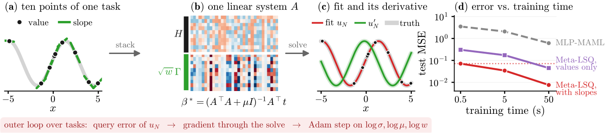
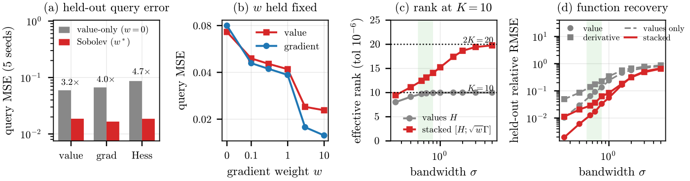
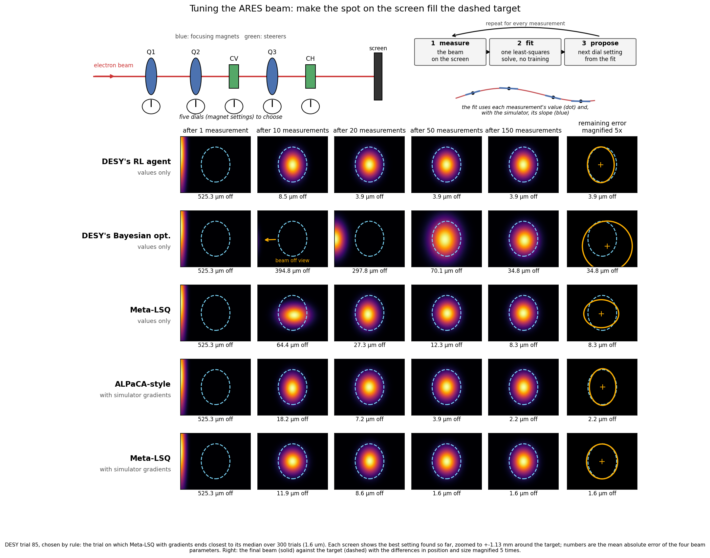

Gradient-based meta-learners such as MAML adapt to a new task with an inner loop of gradient descent that has to be differentiated through, and they meta-learn every network weight. Meta-LSQ fits each task with one regularised least-squares solve over a fixed random Fourier basis and meta-learns only three scalars: a bandwidth, a ridge and a derivative weight.
Since the derivative of a sinusoid is again a sinusoid, the same solve can also take derivative observations, and the fitted model has closed-form derivatives of any order. The method is meant for smooth, low-dimensional families, and the paper also reports where it loses.
How it works
A frozen sine basis
The model is a sum of N random sine waves. Their frequencies and phases are drawn once and never trained; only the amplitudes are fitted, which is a linear problem.
One solve per task
Every value and every derivative observed on a task is one linear equation in the amplitudes. Stacked, they are solved by a single ridge regression, with no inner loop.
Three scalars across tasks
The bandwidth σ, the ridge μ and the derivative weight w are learned with Adam on the query error, by differentiating through the solve.
β∗(σ, μ, w) = (A⊤A + μI)−1 A⊤t, A = [ H ; √w Γ1 ; … ; √w Γd ]
H holds the features at the support points and Γk their derivatives along coordinate k, which are the same features shifted by a quarter period and scaled by the frequency. Read as a kernel method, the solve is gradient-enhanced kriging with random features: σ is a length-scale, μ a noise-to-prior ratio and w the ratio of value noise to derivative noise. The learned scalars follow these predictions in the experiments. Rows for differential operators and integrals are built the same way.
Results
10-shot sinusoid regression
| method | learned parameters | training (s) | test MSE |
|---|---|---|---|
| MAML, standard (8k) | 1,761 | 51 | 0.70 ± 0.13 |
| FOMAML, strong (60k) | 8,513 | 512 | 0.104 |
| MAML + Sobolev loss (8k) | 1,761 | 78 | 0.216 ± 0.031 |
| ALPaCA-style (8k) | 1,721 | 12 | 0.026 ± 0.017 |
| GEK, fitted per task | n/a | n/a | 0.013 ± 0.008 |
| GEK, shared hyperparameters (2k) | 3 | n/a | 0.026 ± 0.014 |
| Meta-LSQ, values only (2k) | 2 | 11 | 0.060 ± 0.043 |
| Meta-LSQ-Sobolev (2k) | 3 | 14 | 0.019 ± 0.016 |
The derivatives are not the whole story. Without them Meta-LSQ is still 12× better than standard MAML, and MAML given the same derivatives stays 11× worse than Meta-LSQ-Sobolev. An exact GP with shared, meta-learned hyperparameters reaches 0.026, so most of the gain over MAML comes from sharing one kernel across tasks and adapting with a closed-form solve. Measured by wall-clock time, Meta-LSQ-Sobolev after half a second of training is 8.6× more accurate than MLP-MAML after fifty seconds.
What the derivative rows add

Closed-loop beam tuning in simulation
The solve also works as the surrogate inside a tuning loop. On the ARES experimental area at DESY, three quadrupoles and two steerers set the position and size of the electron beam on a screen. We simulate the task with Cheetah on DESY's 300 evaluation trials, with their start setting and their budget of 150 measurements. One meta-learned model per beam parameter predicts the beam around the last setting, and the setting predicted closest to the target is measured next.
| method | uses | median | mean | to 99% |
|---|---|---|---|---|
| DESY's RL agent | values | 4.4 | 17.1 | 39 (62%) |
| DESY's Bayesian optimisation | values | 30.7 | 38.0 | – (1%) |
| ALPaCA-style | values | 7.5 | 13.2 | – (46%) |
| Meta-LSQ | values | 7.8 | 13.2 | – (44%) |
| Gradient descent | + derivatives | 14.2 | 27.7 | – (37%) |
| ALPaCA-style | + derivatives | 1.9 | 9.8 | 20 (78%) |
| Meta-LSQ | + derivatives | 1.6 | 9.6 | 16 (79%) |
From measurements alone the two surrogates are level, and about four times more accurate than the Bayesian optimisation, while the agent has the lowest median. Its mean is above the surrogates' because we hold its magnets to their limits, which DESY's simulation did not do; without that it is 11.8 µm. With derivatives from a model of the beamline, Meta-LSQ is the most accurate method. On DESY's simulated grid of targets over the full range of the environment (beam sizes up to 2 mm), the values-only loops end at a median of 7.3 µm, against 14.4 for the agent and 41.9 for the Bayesian optimisation; the agent is level with the surrogates on targets below 0.5 mm.

Where it does not work
- Real data. On gas-sensor calibration under drift (UCI Air Quality, no measured derivatives) Meta-LSQ is not the most accurate method: MLP-MAML is better on three of four targets, though it fails on the fourth.
- Non-smooth targets. Trained on sinusoids and tested on triangle waves, Meta-LSQ stays worse than MLP-MAML in the mean even with a ridge floor. A heavier-tailed frequency draw brings the median close.
- The ridge. With noiseless targets the learned ridge ends up near zero, and on unfamiliar tasks the fit can then take large values away from the data. In-sample criteria such as generalised cross-validation cannot supply a floor, because they tend to a finite value as the ridge vanishes. The ridge has to come from a noise model.
- A learned encoder is about as good. An ALPaCA-style model is about as accurate in class, level in beam tuning from values, and transfers better out of class.
- Beam tuning caveats. The surrogate loop reverses a quadrupole about 240 times per run against 8 for the agent, which costs time on magnets with hysteresis. With derivatives from an imperfect model both surrogates end near 11 µm, worse than Meta-LSQ from values alone on the same trials (8.8 µm).
Use it
pip install git+https://github.com/sulcantonin/metalsq-publicimport torch
from metalsq import MetaLSQ, tasks
model = MetaLSQ(in_dim=1, n_features=200, sobolev=True)
model.meta_fit(tasks.sinusoid(K=10, K_q=10), steps=2000, lr=5e-3) # about 4 s on a laptop CPU
# Adapting to a new task is one ridge solve.
task = tasks.sinusoid(K=10, K_q=50)(1, torch.Generator().manual_seed(0))[0]
f = model.adapt(task.x, task.y, task.dy) # dy is optional (values only)
f(task.xq) # predictions
f.gradient(task.xq) # first derivatives
f.derivative(task.xq, (3,)) # any order, closed formThe repository also holds the research scripts, the stored results and the LaTeX source. One script recomputes every number printed in the paper from the stored results and exits with an error on any disagreement:
cd reproduce && python3 paper/nldl2027/check_numbers.pyCitation
@inproceedings{sulc2027metalsq,
title = {Meta-{LSQ}: A Closed-Form {S}obolev Inner Solver for Few-Shot Meta-Learning},
author = {Sulc, Antonin},
booktitle = {Proceedings of the 8th Northern Lights Deep Learning Conference (NLDL)},
series = {Proceedings of Machine Learning Research},
volume = {352},
publisher = {PMLR},
year = {2027}
}